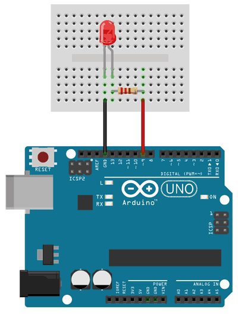

Portafolio de Actividades
Introduccion a Ing. Mecatrónica
Departamento de Ciencias e Ingenierías | Universidad Iberoamericana Puebla, México.
Arduino 1


- Resumen -
Esta práctica tuvo como finalidad utilizar la placa Arduino UNO para comprender el funcionamiento de las salidas digitales. A través de nueve ejercicios progresivos, se abordaron desde conceptos básicos hasta aplicaciones avanzadas, trabajando con pines digitales, control de dispositivos externos y secuencias lógicas. Esto permitió fortalecer habilidades en programación y automatización de sistemas electrónicos.
- Introducción -
Las salidas digitales son clave en la electrónica y la programación de microcontroladores, ya que permiten controlar dispositivos externos mediante señales HIGH y LOW. En esta práctica se utilizó la placa Arduino UNO para aplicar estos conceptos en distintos escenarios y comprender mejor su uso en sistemas electrónicos.
- Materiales -
Placa Arduino Uno
Leds
Protoboard
Display
Resistencias de 220Ω y 1kΩ
Jumpers
- Desarrollo -
Se llevaron a cabo diversas actividades con el propósito de familiarizarse con el entorno de Arduino, adquiriendo conocimientos fundamentales tanto en el ámbito del hardware como del software. Estas actividades incluyeron la comprensión de conceptos básicos de electrónica, la simulación de circuitos mediante la plataforma Tinkercad, y el análisis detallado de los códigos utilizados para la programación de los circuitos. Además, se buscó que los participantes reconocieran y comprendieran el funcionamiento de los distintos componentes electrónicos involucrados, como resistencias, LEDs, pulsadores y sensores. Cada uno de los ejercicios propuestos consistió en realizar la conexión adecuada de los componentes al microcontrolador Arduino UNO y desarrollar el código necesario utilizando el lenguaje de programación propio de la plataforma. Esto permitió poner en práctica los conocimientos adquiridos, reforzar la lógica de programación, y comprender de forma más clara la relación entre las instrucciones del código y el comportamiento físico del circuito..
Simulación
Todos los ejercicios se realizaron a través de simulaciones en la plataforma en línea Tinkercad. Esta herramienta resulta muy útil para diseñar circuitos virtuales y programar dispositivos como Arduino, ya que ofrece un entorno interactivo y seguro que no requiere componentes físicos. Sus funciones de simulación permiten probar y modificar tanto los circuitos como el código, facilitando la comprensión de su funcionamiento y minimizando errores antes de pasar a una implementación real.

Diseño
Durante la etapa de diseño, se analizó minuciosamente la simulación de cada circuito, así como la elaboración y validación del código requerido para controlar el Arduino. Se revisó con atención la elección de los componentes electrónicos, tomando en cuenta sus propiedades y su compatibilidad con el sistema. Además, se organizó lógicamente el programa para garantizar una secuencia adecuada de instrucciones que asegurara el correcto funcionamiento de los dispositivos conectados. Este enfoque permitió detectar posibles fallos con anticipación y mejorar el desempeño del sistema antes de llevarlo a la práctica.
Construcción
Primero abrimos la pagina de Thinker cat para poder copiarlo en la vida real
De ahí se armo el circuito en una protoboard
Se cargo un código en la placa de Arduino uno y se ejecuto el codigo
De ahi se observo que sucecia con el led y como se comportaba
- Resultados -
Se logró una comprensión sólida del funcionamiento de las salidas digitales en Arduino. A lo largo de los ejercicios, se exploraron las diferencias entre los estados HIGH y LOW, así como el control de tiempos de activación y desactivación utilizando funciones como *delay*. También se realizaron secuencias de luces y se programó un display de 7 segmentos. Los conocimientos adquiridos en esta actividad constituyen una base importante para el desarrollo de proyectos más avanzados en el campo de la ingeniería mecatrónica. Comprender el uso de las salidas digitales es fundamental al comenzar a trabajar con sensores, actuadores, motores o en la comunicación entre múltiples dispositivos. En este sentido, dominar estos conceptos iniciales es esencial para abordar proyectos en áreas como la robótica, la automatización y los sistemas mecatrónicos.
- Conclusiones -
El análisis de las salidas digitales en Arduino representa un punto de partida ideal para introducirse en el uso de la placa, la programación y los componentes electrónicos, ya que proporciona una base firme para comenzar a desarrollar proyectos dentro del ámbito de la ingeniería mecatrónica. Al finalizar esta actividad, se obtuvo un conocimiento adecuado sobre la programación de pines de salida y el manejo de señales digitales
- Referencias -
Microchip AVR® microcontroller primer: programming and interfacing, third edition (synthesis lectures on digital circuits and systems), BARRETT, Steven F. Pack Daniel J., Editorial Morgan & Claypool, 2019.
K. He, X. Zhang, S. Ren and J. Sun, "Deep Residual Learning for Image Recognition," 2016 IEEE Conference on Computer Vision and Pattern Recognition (CVPR), Las Vegas, NV, USA, 2016, pp. 770-778, doi: 10.1109/CVPR.2016.90.
J. D. Hunter, "Matplotlib: A 2D Graphics Environment," in Computing in Science & Engineering, vol. 9, no. 3, pp. 90-95, May-June 2007, doi: 10.1109/MCSE.2007.55.
- Descargables -
Descargar documento PDF: documento.pdf
Descargar codigo Arduino: codigo.ino
Descargar Archivo 3d .STL: pieza.stl